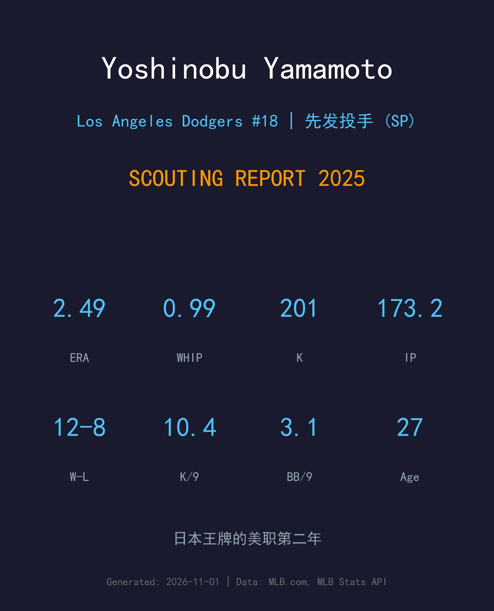
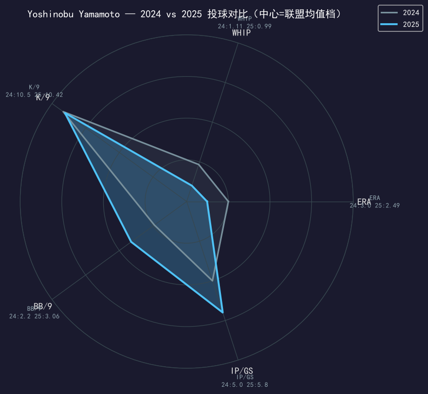
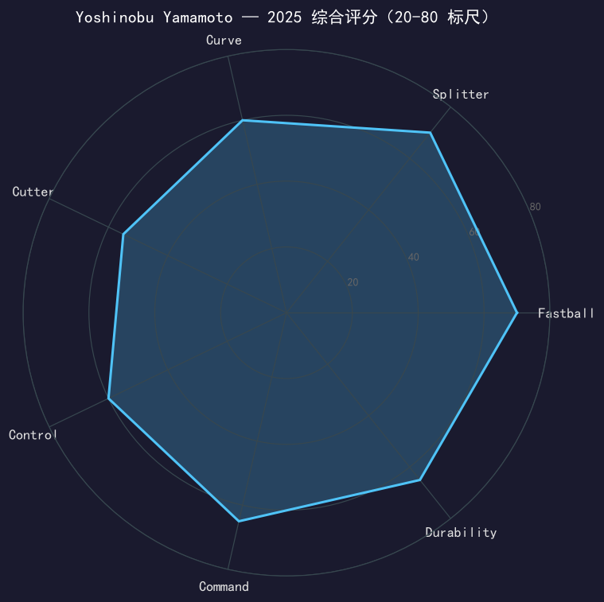

Los Angeles Dodgers #18 | 先发投手 | 右投 | 日本王牌

山本由伸是日本职棒史上最伟大的投手之一：欧力士时期三届泽村赏得主、2023 年率队夺日本一，2024 年以 12 年 3.25 亿美元加盟道奇，创下当时投手最大合约纪录。
2025 年——他的大联盟第二年——他交出了 30 场先发、12 胜 8 负、2.49 自责分率、0.99 WHIP、201 次三振的王牌级成绩单，并首次入选全明星。季后赛更是他的封神舞台：6 场出赛 5 场先发、5 胜 1 负、1.45 ERA、0.78 WHIP，是道奇世界大赛二连霸的第一功臣。
从 2024 年肩伤阴影中完全走出，山本证明了道奇的天价投资物有所值。27 岁的他正值巅峰，是道奇未来五年轮值的绝对核心。
三连泽村赏（2021/2022/2023）、两届太平洋联盟 MVP，2022 年防御率低至 1.68；日职生涯胜率高达 .715。
WBC 决赛对决大谷翔平留下「九球三上三下」传说，同年率欧力士夺日本一系列赛冠军，完成国家队+俱乐部双冠。
投手史上最大合约。 rookie 年 18 场先发 7-2、3.00 ERA，季末肩伤提前关机，留下「健康时是王牌」的悬念。
常规赛 2.49 ERA / 201K 首次入选全明星；季后赛 5 胜 1 负、1.45 ERA，世界大赛两场胜投，无可争议的冠军轮值王牌。

| 赛季 | G | GS | W-L | ERA | WHIP | IP | SO | BB | K/9 |
|---|---|---|---|---|---|---|---|---|---|
| 2024 | 18 | 18 | 7-2 | 3.00 | 1.11 | 90.0 | 105 | 22 | 10.50 |
| 2025 | 30 | 30 | 12-8 | 2.49 | 0.99 | 173.2 | 201 | 59 | 10.42 |
从 18 场的肩伤赛季到 30 场全勤王牌：局数近乎翻倍、ERA 降 0.51、WHIP 降至 1 以下。唯一的代价是 BB/9 从 2.20 升到 3.06——用少量保送换大量深入局数，是球队乐意接受的权衡。
2025 赛季真实配球数据（MLB Stats API pitchArsenal）：
上旋效率极佳的速球，实际进垒点比打者观感更高，是他一切配球的基准。速球压制力让指叉球更加致命。
真正的杀人武器：与速球仅 4.5 mph 的极小速差却伴随骤沉，打者哪怕识别正确也常常打成滚地球或挥空。大联盟第二年已被评为联盟最佳指叉之一。
大弧度 12-6 曲球，主要用于两好球后扩大好球带垂直范围，与速球形成近 19 mph 的速差视野冲击。
2025 年明显增用的第四球种，挤进右打者内角、破坏球棒，也让他面对左打者时不用依赖曲球单一路线。
配球调味剂，用于特定打者的内角下沉攻击与滚地球诱导，偶尔取代四缝线抢好球数。
山本 2025 年的配球分布近乎完美：四缝线 35% 建立球数、指叉 25% 制造挥空、曲球 18% 扩大范围、卡特 11% 破坏棒头，再加少量伸卡滑球。没有一种球种占比失衡，打者无法在任何一个球数锁定他的下一球——这是他「逃打打率」常年低于联盟均值的核心原因。
K/9 10.42 稳居国联前列，201 次三振创生涯新高。更重要的是他的三振分布：两好球后的指叉-曲球组合几乎无解。0.99 的 WHIP 意味着他几乎不给自己添麻烦——113 支被安打分布在 173.2 局中，平均每局不到 0.7 支。
常规赛已经足够出色，但季后赛才是他的加冕礼：5 场先发 5 胜 1 负、1.45 ERA、0.78 WHIP、37.1 局 33 三振——包括世界大赛两场胜投。在道奇最需要轮值支柱的十月，山本把「日本王牌」四个字写进了洛杉矶的棒球史。国联赛扬票选的热门人选，实至名归。

六球种教科书级王牌，季后赛血统已验证
A 级 / 轮值王牌
道奇 2025 季后赛夺冠之路：外卡 2-0 红人 → NLDS 3-1 费城人 → NLCS 4-0 酿酒人 → 世界大赛 4-3 多伦多蓝鸟。
| G | GS | W-L | ERA | WHIP | IP | SO | BB |
|---|---|---|---|---|---|---|---|
| 6 | 5 | 5-1 | 1.45 | 0.78 | 37.1 | 33 | 6 |
山本由伸与道奇的 12 年合约还剩十年，而他已经提前把「王牌」两个字写进了合同里。2026 年他 28 岁，正当投手生涯的黄金起点——如果健康允许，赛扬奖与 300 胜级别的累积都不是奢望。道奇王朝的核心拼图，已经就位。
2026 目标：冲击赛扬奖，局数挑战 200，BB/9 压回 2.5
中期：成长为道奇轮值的长期领袖，像前辈 Greinke/Kershaw 那样建立投手丘王朝
长期：12 年合约的每一季都在书写日籍投手美职新纪录
山本由伸出生于日本冈山县备前市，高中时期以「平成最后的怪物」之称闻名全国。2017 年加盟欧力士野牛后，他迅速统治日本职棒：三连泽村赏、两届太平洋联盟 MVP，2023 年带领欧力士夺得日本一。
2023 年 3 月的世界棒球经典赛决赛，他对阵美国队的最后半局连续三振，包括与大谷翔平的对决，成为 WBC 历史上最经典的画面之一。同年冬天，他与道奇签下 12 年 3.25 亿美元合约——投手史上最大合同——与大谷、贝茨、弗里曼一起组成了令全联盟胆寒的道奇银河战舰。
2025 年的世界大赛冠军是他大联盟生涯的第一枚戒指，但几乎可以肯定，不会是最后一枚。在洛杉矶，他有一个更简单的目标：成为这个时代最伟大的投手。